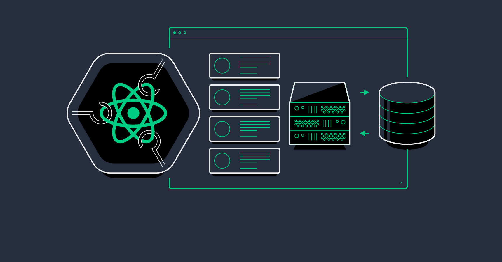
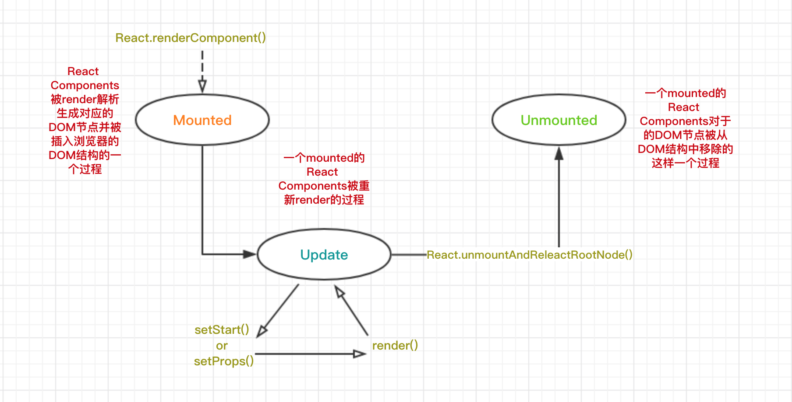
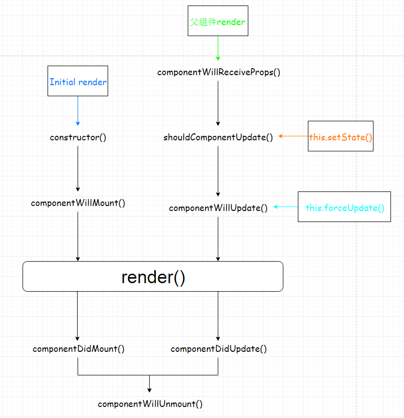
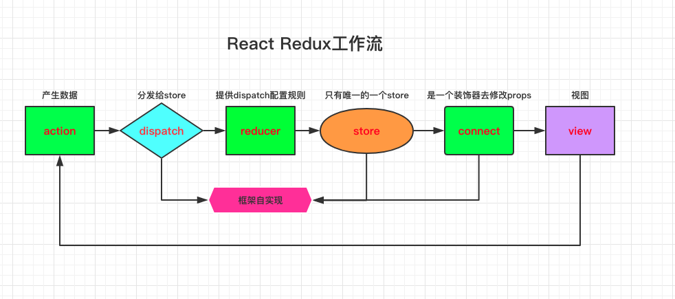

用于构建用户界面的 JavaScript 库
React 使创建交互式 UI 变得轻而易举。为你应用的每一个状态设计简洁的视图，当数据改变时 React 能有效地更新并正确地渲染组件。以声明式编写 UI，可以让你的代码更加可靠，且方便调试。创建拥有各自状态的组件，再由这些组件构成更加复杂的 UI。组件逻辑使用 JavaScript 编写而非模版，因此你可以轻松地在应用中传递数据，并使得状态与 DOM 分离。无论你现在正在使用什么技术栈，你都可以随时引入 React 来开发新特性，而不需要重写现有代码。

1. React 简介
React的核心思想是：封装组件。各个组件维护自己的状态和UI，当状态变更，自动重新渲染整个组件。基于这种方式的一个直观感受就是我们不再需要不厌其烦地来回查找某个DOM元素，然后操作DOM去更改UI。
- React 核心概念
- 组件化
JSX语法Virtual DOM虚拟节点Data Flow数据流
import React, { Component } from "react";
import { render } from "react-dom";
class HelloMessage extends Component {
render() {
return <div>Hello {this.props.name}</div>;
}
}
render(<HelloMessage name="John" />, mountNode);
- 组件
React 应用都是构建在组件之上。上面的 HelloMessage 就是一个 React 构建的组件，最后一句 render 会把这个组件显示到页面上的某个元素 mountNode 里面，显示的内容就是 <div>Hello John</div>。
props 是组件包含的两个核心概念之一，另一个是 state（这个组件没用到）。可以把 props 看作是组件的配置属性，在组件内部是不变的，只是在调用这个组件的时候传入不同的属性（比如这里的 name）来定制显示这个组件。
JSX
从上面的代码可以看到将 HTML 直接嵌入了 JS 代码里面，这个就是 React 提出的一种叫 JSX 的语法，这应该是最开始接触 React 最不能接受的设定之一，因为前端被“表现和逻辑层分离”这种思想“洗脑”太久了。但实际上组件的 HTML 是组成一个组件不可分割的一部分，能够将 HTML 封装起来才是组件的完全体，React 发明了 JSX 让 JS 支持嵌入 HTML 不得不说是一种非常聪明的做法，让前端实现真正意义上的组件化成为了可能。
好消息是你可以不一定使用这种语法，后面会进一步介绍 JSX，到时候你可能就会喜欢上了。现在要知道的是，要使用包含 JSX 的组件，是需要“编译”输出 JS 代码才能使用的，之后就会讲到开发环境。
Virtual DOM
当组件状态 state 有更改的时候，React 会自动调用组件的 render 方法重新渲染整个组件的 UI。
当然如果真的这样大面积的操作 DOM，性能会是一个很大的问题，所以 React 实现了一个Virtual DOM，组件 DOM 结构就是映射到这个 Virtual DOM 上，React 在这个 Virtual DOM 上实现了一个 diff 算法，当要重新渲染组件的时候，会通过 diff 寻找到要变更的 DOM 节点，再把这个修改更新到浏览器实际的 DOM 节点上，所以实际上不是真的渲染整个 DOM 树。这个 Virtual DOM 是一个纯粹的 JS 数据结构，所以性能会比原生 DOM 快很多。
Data Flow
“单向数据绑定”是 React 推崇的一种应用架构的方式。当应用足够复杂时才能体会到它的好处，虽然在一般应用场景下你可能不会意识到它的存在，也不会影响你开始使用 React，你只要先知道有这么个概念。
2. JSX 语法
React.createElement- 第一个参数是标签名
- 第二个参数是属性对象
- 第三个参数是子元素
// 创建方法
React.createElement("a", { href: "http://facebook.github.io/react/" }, "Hello!");
// 标签的嵌套
var child = React.createElement("li", null, "Text Content");
var root = React.createElement("ul", { className: "my-list" }, child);
React.render(root, document.body);
// 对于常见的HTML标签，React已经内置了工厂方法
var root = React.DOM.ul({ className: "my-list" }, React.DOM.li(null, "Text Content"));
- 使用 JSX
// 使用HTML标签
// class在JSX里要写成className，因为class在JS里是保留关键字
import React from "react";
import { render } from "react-dom";
var myDivElement = <div className="foo" />;
render(myDivElement, document.getElementById("mountNode"));
import React from "react";
import { render } from "react-dom";
import MyComponent from "./MyComponet";
var myElement = <MyComponent someProperty={true} />;
render(myElement, document.body);
- 属性扩散
- 有时候你需要给组件设置多个属性，你不想一个个写下这些属性，或者有时候你甚至不知道这些属性的名称，这时候
spread attributes的功能就很有用了。
- 有时候你需要给组件设置多个属性，你不想一个个写下这些属性，或者有时候你甚至不知道这些属性的名称，这时候
var props = {};
props.foo = x;
props.bar = y;
var component = <Component {...props} />;
// 写在后面的属性值会覆盖前面的属性
var props = { foo: "default" };
var component = <Component {...props} foo={"override"} />;
console.log(component.props.foo); // 'override'
3. 单向传递
一般来说，一个组件类由
extends Component创建，并且提供一个render方法以及其他可选的生命周期函数、组件相关的事件或方法来定义。
JSX语法className代替class属性，使用驼峰命名render只能返回一个div标签- 使用
props进行父子信息的传递 - 使用函数的方式进行子父信息的传递
// 定义一个TodoList的React组件，通过继承React.Component来实现
class TestComponent extends React.Component {
render() {
return (
<div>
<h3>{this.props.name}</h3>
<ul>
{this.props.addresses.map((it) => (
<li key={it}>{it}</li>
))}
</ul>
<input
type="text"
className="form-control"
onChange={this.props.onChange}
placeholder="搜索"
/>
</div>
);
}
}
ReactDOM.render(
<TestComponent
name="Escape"
addresses={[1, 2, 3]}
onChange={(e) => console.log(e.target.value)}
/>,
document.getElementById("main")
);
- 参数传递
render: function() {
return <p onClick={this.handleClick.bind(this, 'extra param')}>;
},
handleClick: function(param, event) {
// handle click
}
4. 双向绑定
state是只读的，使用setState来改变值props只能从父组件传递给子组件，单向传递state是组件的内部状态，相当于私有属性，而props相当于对象的公有属性- 兄弟组件需要通信，需要上溯到共同的父组件
class InputComponent extends React.Component {
render() {
return <input type="text" onChange={(e) => this.props.onChange(e.target.value)} />;
}
}
class LabelComponent extends React.Component {
render() {
return <div>output: {this.props.value}</div>;
}
}
class RootComponent extends React.Component {
constructor(props) {
super(props);
this.state = { value: "" };
}
render() {
return (
<div>
<InputComponent onChange={(v) => this.setState({ value: v })} />
<LabelComponent value={this.state.value} />
</div>
);
}
}
ReactDOM.render(<RootComponent />, document.getElementById("main"));
5. 组件生命周期
- 生命周期函数

- 更新方式 - 在 react 中触发 render 的有 4 条路径
- 首次渲染
Initial Render - 调用
this.setState - 并不是一次
setState会触发一次render，React可能会合并操作，再一次性进行render - 父组件发生更新
- 一般就是 props 发生改变，但是就算
props没有改变或者父子组件之间没有数据交换也会触发render - 调用
this.forceUpdate
- 首次渲染

6. DOM 操作
大部分情况下你不需要通过查询
DOM元素去更新组件的UI，你只要关注设置组件的状态（setState）。但是可能在某些情况下你确实需要直接操作DOM。
findDOMNode()findDOMNode()不能用在无状态组件上- 当组件加载到页面上之后(
mounted)，通过react-dom提供的findDOMNode()方法拿到组件对应的DOM元素
import { findDOMNode } from 'react-dom';
// Inside Component class
componentDidMound() {
const el = findDOMNode(this);
}
Refs- 通过在要引用的
DOM元素上面设置一个ref属性指定一个名称，然后通过this.refs.name来访问对应的DOM元素
- 通过在要引用的
class App extends Component {
constructor() {
return { userInput: "" };
}
handleChange(e) {
this.setState({ userInput: e.target.value });
}
clearAndFocusInput() {
this.setState({ userInput: "" }, () => {
this.refs.theInput.focus();
});
}
render() {
return (
<div>
<div onClick={this.clearAndFocusInput.bind(this)}>Click to Focus and Reset</div>
<input
ref="theInput"
value={this.state.userInput}
onChange={this.handleChange.bind(this)}
/>
</div>
);
}
}
- 总结
- 你可以使用
ref到的组件定义的任何公共方法，比如this.refs.myTypeahead.reset() Refs是访问到组件内部DOM节点唯一可靠的方法Refs会自动销毁对子组件的引用（当子组件删除时）- 不要在
render或者render之前访问refs - 不要滥用
refs，比如只是用它来按照传统的方式操作界面UI：找到DOM-> 更新DOM
- 你可以使用
7. 进化 Flux
我们可以先通过对比
Redux和Flux的实现来感受一下Redux带来的惊艳。
首先是 action creators，Flux 是直接在 action 里面调用 dispatch。
export function addTodo(text) {
AppDispatcher.dispatch({
type: ActionTypes.ADD_TODO,
text: text,
});
}
Redux 把它简化成了这样。
export function addTodo(text) {
return {
type: ActionTypes.ADD_TODO,
text: text,
};
}
这一步把 dispatcher 和 action 解藕了，很快我们就能看到它带来的好处。接下来是 Store，这是 Flux 里面的 Store。
let _todos = [];
const TodoStore = Object.assign(new EventEmitter(), {
getTodos() {
return _todos;
},
});
AppDispatcher.register(function (action) {
switch (action.type) {
case ActionTypes.ADD_TODO:
_todos = _todos.concat([action.text]);
TodoStore.emitChange();
break;
}
});
export default TodoStore;
Redux 把它简化成了这样。同样把 dispatch 从 Store 里面剥离了，Store 变成了一个 pure function(纯函数)：(state, action) => state。
const initialState = { todos: [] };
export default function TodoStore(state = initialState, action) {
switch (action.type) {
case ActionTypes.ADD_TODO:
return { todos: state.todos.concat([action.text]) };
default:
return state;
}
8. Redux 基础

三个基本原则
- 整个应用只有唯一一个可信数据源，也就是只有一个
Store State只能通过触发Action来更改State的更改必须写成纯函数，也就是每次更改总是返回一个新的State，在Redux里这种函数称为Reducer
- 整个应用只有唯一一个可信数据源，也就是只有一个
Actions
Action 很简单，就是一个单纯的包含 { type, payload } 的对象，type 是一个常量用来标示动作类型，payload 是这个动作携带的数据。Action 需要通过 store.dispatch() 方法来发送。比如一个最简单的 action：
{
type: 'ADD_TODO',
text: 'Build my first Redux app'
}
一般来说，会使用函数（Action Creators）来生成 action，这样会有更大的灵活性，Action Creators 是一个 **pure function**，它最后会返回一个 action 对象：
function addTodo(text) {
return {
type: "ADD_TODO",
text,
};
}
所以现在要触发一个动作只要调用 dispatch: dispatch(addTodo(text))，稍后会讲到如何拿到 store.dispatch。
- Reducers
Reducer 用来处理 Action 触发的对状态树的更改。所以一个 reducer 函数会接受 oldState 和 action 两个参数，返回一个新的 state：(oldState, action) => newState。一个简单的 reducer 可能类似这样：
const initialState = {
a: "a",
b: "b",
};
function someApp(state = initialState, action) {
switch (action.type) {
case "CHANGE_A":
return { ...state, a: "Modified a" };
case "CHANGE_B":
return { ...state, b: action.payload };
default:
return state;
}
}
值得注意的有两点：
- 我们用到了
object spread语法 确保不会更改到oldState而是返回一个newState - 对于不需要处理的
action，直接返回oldState
Reducer 也是 pure function，这点非常重要，所以绝对不要在 reducer 里面做一些引入 side-effects 的事情，比如：
- 直接修改
state参数对象 - 请求
API - 调用不纯的函数，比如
Data.now()Math.random()
因为 Redux 里面只有一个 Store，对应一个 State 状态，所以整个 State 对象就是由一个 reducer 函数管理，但是如果所有的状态更改逻辑都放在这一个 reducer 里面，显然会变得越来越巨大，越来越难以维护。得益于纯函数的实现，我们只需要稍微变通一下，让状态树上的每个字段都有一个 reducer 函数来管理就可以拆分成很小的 reducer 了：
function someApp(state = {}, action) {
return {
a: reducerA(state.a, action),
b: reducerB(state.b, action),
};
}
对于 reducerA 和 reducerB 来说，他们依然是形如：(oldState, action) => newState 的函数，只是这时候的 state 不是整个状态树，而是树上的特定字段，每个 reducer 只需要判断 action，管理自己关心的状态字段数据就好了。Redux 提供了一个工具函数 combineReducers 来简化这种 reducer 合并：
import { combineReducers } from "redux";
const someApp = combineReducers({
a: reducerA,
b: reducerB,
});
如果 reducer 函数名字和字段名字相同，利用 ES6 的 Destructuring 可以进一步简化成：combineReducers({ a, b })，象 someApp 这种管理整个 State 的 reducer，可以称为 root reducer。
- Store
现在有了 Action 和 Reducer，Store 的作用就是连接这两者，Store 的作用有这么几个：
Hold住整个应用的State状态树- 提供一个
getState()方法获取State - 提供一个
dispatch()方法发送action更改State - 提供一个
subscribe()方法注册回调函数监听State的更改
创建一个 Store 很容易，将 root reducer 函数传递给 createStore 方法即可：
import { createStore } from "redux";
import someApp from "./reducers";
let store = createStore(someApp);
// 你也可以额外指定一个初始 State（initialState），这对于服务端渲染很有用
// let store = createStore(someApp, window.STATE_FROM_SERVER);
现在我们就拿到了 store.dispatch，可以用来分发 action 了：
let unsubscribe = store.subscribe(() => console.log(store.getState()));
// Dispatch
store.dispatch({ type: "CHANGE_A" });
store.dispatch({ type: "CHANGE_B", payload: "Modified b" });
// Stop listening to state updates
unsubscribe();
9. Data Flow
Data Flow只是一种应用架构的方式，比如数据如何存放，如何更改数据，如何通知数据更改等等，所以它不是React提供的额外的什么新功能，可以看成是使用React构建大型应用的一种最佳实践。
- 官方的
Flux- 更优雅的
Redux(Redux(oldState) => newState)
以上提到的 store.dispatch(action) -> reducer(state, action) -> store.getState() 其实就构成了一个“单向数据流”，我们再来总结一下。
1. 调用 store.dispatch(action)
- Action 是一个包含
{ type, payload }的对象，它描述了“发生了什么”，比如：
{ type: 'LIKE_ARTICLE', articleID: 42 }
{ type: 'FETCH_USER_SUCCESS', response: { id: 3, name: 'Mary' } }
{ type: 'ADD_TODO', text: 'Read the Redux docs.' }
- 你可以在任何地方调用
store.dispatch(action)，比如组件内部，Ajax回调函数里面等等。
2. Action 会触发给 Store 指定的 root reducer
root reducer会返回一个完整的状态树，State对象上的各个字段值可以由各自的reducer函数处理并返回新的值。reducer函数接受(state, action)两个参数reducer函数判断action.type然后处理对应的action.payload数据来更新并返回一个新的state
3. Store 会保存 root reducer 返回的状态树
- 新的
State会替代旧的State，然后所有store.subscribe(listener)注册的回调函数会被调用，在回调函数里面可以通过store.getState()拿到新的State。 - 这就是
Redux的运作流程，接下来看如何在React里面使用Redux。
10. React 中使用 Redux
和 Flux 类似，Redux 也是需要注册一个回调函数 store.subscribe(listener) 来获取 State 的更新，然后我们要在 listener 里面调用 setState() 来更新 React 组件。
Redux 官方提供了 react-redux 来简化 React 和 Redux 之间的绑定，不再需要像 Flux 那样手动注册／解绑回调函数。
接下来看一下是怎么做到的，react-redux 只有两个 API
<Provider>
<Provider>作为一个容器组件，用来接受Store，并且让Store对子组件可用，用法如下：
import { render } from "react-dom";
import { Provider } from "react-redux";
import App from "./app";
render(
<Provider store={store}>
<App />
</Provider>,
document.getElementById("root")
);
- 这时候
<Provider>里面的子组件<App />才可以使用connect方法关联store。 <Provider>的实现很简单，他利用了React一个（暂时）隐藏的特性Contexts，Context用来传递一些父容器的属性对所有子孙组件可见，在某些场景下面避免了用props传递多层组件的繁琐，要想更详细了解Contexts可以参考这篇文章。
Connect
connect()这个方法略微复杂一点，主要是因为它的用法非常灵活：connect([mapStateToProps], mapDispatchToProps], [mergeProps], [options])，它最多接受 4 个参数，都是可选的，并且这个方法调用会返回另一个函数，这个返回的函数来接受一个组件类作为参数，最后才返回一个和Redux store关联起来的新组件，类似这样：
class App extends Component { ... }
export default connect()(App);
- 这样就可以在
App这个组件里面通过props拿到Store的dispatch方法，但是注意现在的App没有监听Store的状态更改，如果要监听 Store 的状态更改，必须要指定mapStateToProps参数。 - 先来看它的参数：
[mapStateToProps(state, [ownProps]): stateProps]: 第一个可选参数是一个函数，只有指定了这个参数，这个关联（connected）组件才会监听 Redux Store 的更新，每次更新都会调用mapStateToProps这个函数，返回一个字面量对象将会合并到组件的props属性。ownProps是可选的第二个参数，它是传递给组件的props，当组件获取到新的props时，ownProps都会拿到这个值并且执行mapStateToProps这个函数。[mapDispatchProps(dispatch, [ownProps]): dispatchProps]: 这个函数用来指定如何传递dispatch给组件，在这个函数里面直接 dispatch action creator，返回一个字面量对象将会合并到组件的props属性，这样关联组件可以直接通过props调用到action， Redux 提供了一个bindActionCreators()辅助函数来简化这种写法。 如果省略这个参数，默认直接把dispatch作为props传入。ownProps作用同上。- 剩下的两个参数比较少用到，更详细的说明参看官方文档，其中提供了很多简单清晰的用法示例来说明这些参数。
具体例子
Redux创建Store，Action，Reducer这部分就省略了，这里只看react-redux的部分。
import React, { Component } from "react";
import someActionCreator from "./actions/someAction";
import * as actionCreators from "./actions/otherAction";
function mapStateToProps(state) {
return {
propName: state.propName,
};
}
function mapDispatchProps(dispatch) {
return {
someAction: (arg) => dispatch(someActionCreator(arg)),
otherActions: bindActionCreators(actionCreators, dispatch),
};
}
class App extends Component {
render() {
// `mapStateToProps` 和 `mapDispatchProps` 返回的字段都是 `props`
const { propName, someAction, otherActions } = this.props;
return <div onClick={someAction.bind(this, "arg")}>{propName}</div>;
}
}
export default connect(mapStateToProps, mapDispatchProps)(App);
- 如前所述，这个
connected的组件必须放到<Provider>的容器里面，当State更改的时候就会自动调用mapStateToProps和mapDispatchProps从而更新组件的props。 组件内部也可以通过props调用到action，如果没有省略了mapDispatchProps，组件要触发action就必须手动dispatch，类似这样：this.props.dispatch(someActionCreator('arg'))。
11. 服务器端渲染
React 提供了两个方法 renderToString 和 renderToStaticMarkup 用来将组件（Virtual DOM）输出成 HTML 字符串，这是 React 服务器端渲染的基础，它移除了服务器端对于浏览器环境的依赖，所以让服务器端渲染变成了一件有吸引力的事情。
服务器端渲染除了要解决对浏览器环境的依赖，还要解决两个问题：
- 前后端可以共享代码
- 前后端路由可以统一处理
React 生态提供了很多选择方案，这里我们选用 Redux 和 react-router 来做说明。
- Redux
Redux 提供了一套类似 Flux 的单向数据流，整个应用只维护一个 Store，以及面向函数式的特性让它对服务器端渲染支持很友好。
2 分钟了解Redux是如何运作的
关于 Store：
- 整个应用只有一个唯一的 Store
- Store 对应的状态树（State），由调用一个 reducer 函数（root reducer）生成
- 状态树上的每个字段都可以进一步由不同的 reducer 函数生成
- Store 包含了几个方法比如
dispatch,getState来处理数据流 - Store 的状态树只能由
dispatch(action)来触发更改
Redux 的数据流：
- action 是一个包含
{ type, payload }的对象 - reducer 函数通过
store.dispatch(action)触发 - reducer 函数接受
(state, action)两个参数，返回一个新的 state - reducer 函数判断
action.type然后处理对应的action.payload数据来更新状态树
所以对于整个应用来说，一个 Store 就对应一个 UI 快照，服务器端渲染就简化成了在服务器端初始化 Store，将 Store 传入应用的根组件，针对根组件调用 renderToString 就将整个应用输出成包含了初始化数据的 HTML。
- react-router
react-router 通过一种声明式的方式匹配不同路由决定在页面上展示不同的组件，并且通过 props 将路由信息传递给组件使用，所以只要路由变更，props 就会变化，触发组件 re-render。
假设有一个很简单的应用，只有两个页面，一个列表页 /list 和一个详情页 /item/:id，点击列表上的条目进入详情页。
可以这样定义路由，./routes.js
import React from "react";
import { Route } from "react-router";
import { List, Item } from "./components";
// 无状态（stateless）组件，一个简单的容器，react-router 会根据 route
// 规则匹配到的组件作为 `props.children` 传入
const Container = (props) => {
return <div>{props.children}</div>;
};
// route 规则：
// - `/list` 显示 `List` 组件
// - `/item/:id` 显示 `Item` 组件
const routes = (
<Route path="/" component={Container}>
<Route path="list" component={List} />
<Route path="item/:id" component={Item} />
</Route>
);
export default routes;
- Reducer
Store 是由 reducer 产生的，所以 reducer 实际上反映了 Store 的状态树结构
./reducers/index.js
import listReducer from "./list";
import itemReducer from "./item";
export default function rootReducer(state = {}, action) {
return {
list: listReducer(state.list, action),
item: itemReducer(state.item, action),
};
}
rootReducer 的 state 参数就是整个 Store 的状态树，状态树下的每个字段对应也可以有自己的 reducer，所以这里引入了 listReducer 和 itemReducer，可以看到这两个 reducer 的 state 参数就只是整个状态树上对应的 list 和 item 字段。
./reducers/list.js
const initialState = [];
export default function listReducer(state = initialState, action) {
switch (action.type) {
case "FETCH_LIST_SUCCESS":
return [...action.payload];
default:
return state;
}
}
list 就是一个包含 items 的简单数组，可能类似这种结构：[{ id: 0, name: 'first item'}, {id: 1, name: 'second item'}]，从 'FETCH_LIST_SUCCESS' 的 action.payload 获得。然后是 ./reducers/item.js，处理获取到的 item 数据。
const initialState = {};
export default function listReducer(state = initialState, action) {
switch (action.type) {
case "FETCH_ITEM_SUCCESS":
return [...action.payload];
default:
return state;
}
}